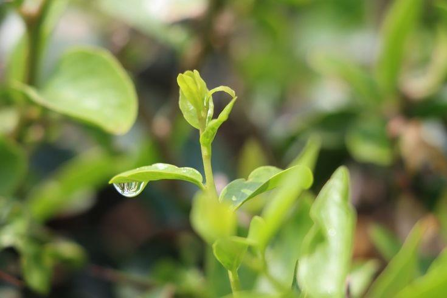
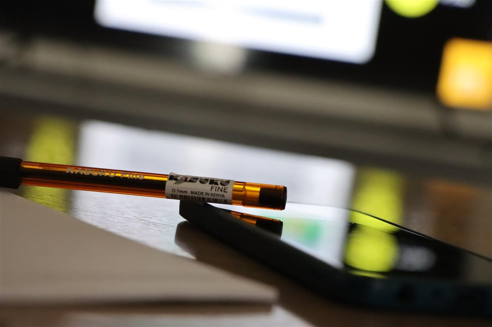

Where Art Meets the Mind
Exploring how photography as a creative lens enhances cognitive memory and nurtures mental well-being.
This project explores the intersection of art, specifically photography, and its profound impact on enhancing and preserving memories.
With a passion for both art and memory cultivation, this project delves into the ways in which photography becomes a powerful tool for capturing, preserving, and revitalizing our most cherished moments.
The objectives of this exploration include understanding the cognitive processes involved in memory formation and retention when mediated through visual art. By conducting a literature review on the psychology of memory and the effects of visual stimuli, this study aims to establish a theoretical framework for the connection between art, photography, and memory enhancement.
Preliminary findings suggest a symbiotic relationship between photography as an artistic expression and its ability to evoke and strengthen memories. The visual nature of photography serves as a catalyst for emotional recall, offering a unique and immersive experience that enhances the longevity of personal memories.

Art is the expression of human creative skill and imagination, resulting in works valued for their emotional power and intellectual depth.
When we place our attention on the visual aspect of art, we often come across photography - a medium that bridges raw emotion and tangible memory.
" Art washes away from the soul the dust of everyday life. - Pablo Picasso
Photography is the art of capturing and recording images - transforming commonplace scenes into spectacular visual narratives.
Photographers create sentiments, tell tales, and explore the depths of human experience through artistic composition, lighting, and perspective.
Photography's creative purposes vary from documenting social and cultural developments to expressing individual ideas and feelings, making it a powerful medium for communication and self-expression.

Human memory and photography are deeply interconnected in ways that externalize, improve, and preserve our memories. By preserving situations that could otherwise escape our memories and offering concrete clues for recall, photography acts as a memory enhancer.
Visual imagery activates hippocampal pathways, reinforcing long-term memory formation and retrieval.
Photos trigger emotional responses that deepen memory traces, making experiences more vivid and lasting.
Photography externalizes our memories, protecting them from the natural degradation of biological recall.
How embracing photography nurtures your mind and well-being
Engaging in photography develops therapeutic routines, leaving individuals feeling refreshed and present.
Making valuable connections through shared photography significantly improves overall well-being.
Capturing unique moments helps individuals dealing with sadness or depression reconnect with joy.
Photography allows individuals to see and appreciate the beauty in the world around them.
Photography is a cognitive exercise that contributes to maintaining a healthy, sharp brain.
Art therapy reduces cortisol levels, the hormone responsible for stress, promoting calm and balance.
Photography encourages the translation of complex emotions into visual art, fostering creative growth.
Reference: Jenn Pereira - 10 Benefits of Photography to Mental Health
Every picture is a small work of art that holds a unique memory - little time capsules preserving the emotions and experiences that shape us.
Barasch, A. et al. (2017). Photographic memory: The effects of volitional photo taking on memory for visual and auditory aspects of an experience. Psychological Science.
Berry, M. et al. (2007). The use of wearable cameras (SenseCams) as a pictorial diary to improve autobiographical memory in a patient with limbic encephalitis: A preliminary report. Neuropsychological Rehabilitation.
Jenn Pereira. 10 Benefits of Photography to Mental Health.
{kind=link}
{kind=link}
{kind=link}
{kind=link}
{kind=link}
{kind=link}
{kind=link}
{kind=link}
{kind=link}
{kind=link}
{kind=link}
{kind=link}